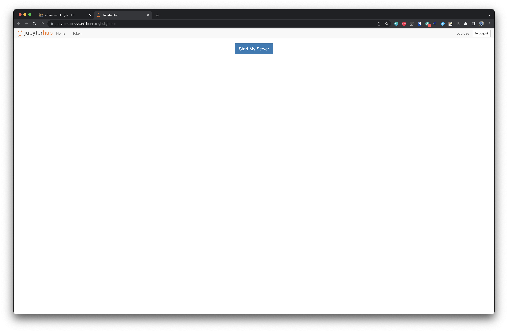
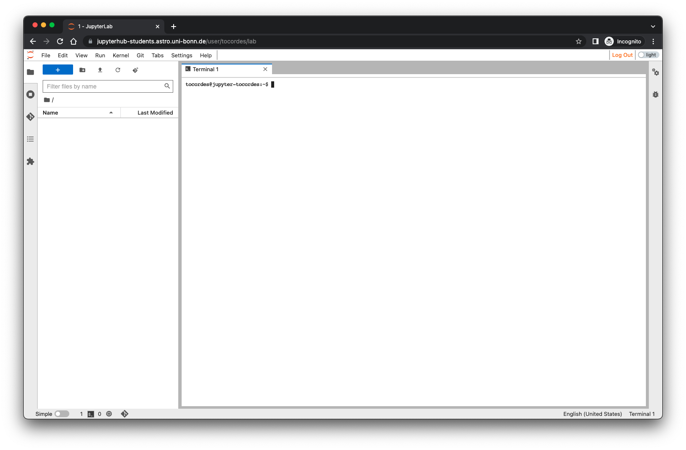
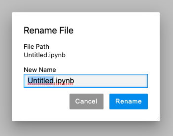
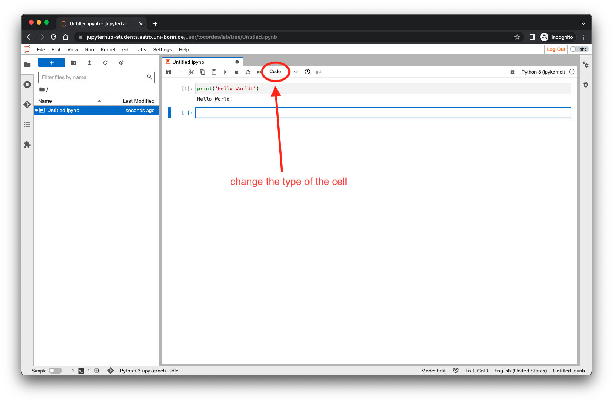
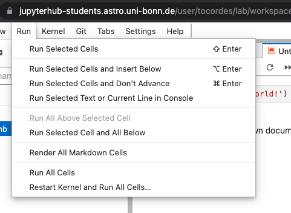
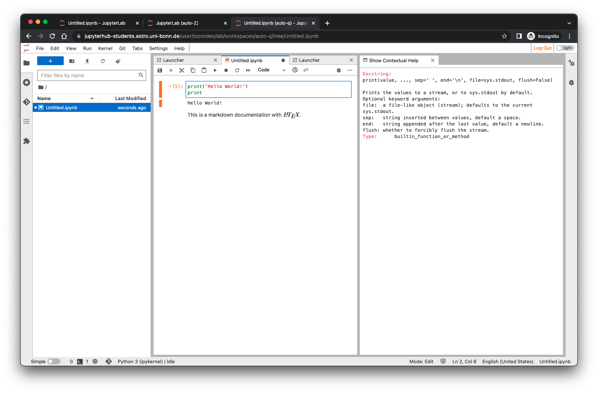

This document is the starting manual using the JupyterLab-System of the HRZ via eCampus.
Author: Oliver Cordes - 2023-04-05
Table of contents
Before you start with this manual please be sure that you're using either the Mozilla Firefox or Google Chrome/Chromium browser. We had a lot of problems with Microsoft Edge and Apple Safari browsers.
Also there is no need to install any special software on you devices, Laptop, Tables or Smart phones. You only need an internet connection, a working browser and a keyboard and mouse for editing files. A big screen for your work is in any case a good solution.
The JupyterLab environment is running on a server in the Main Computing Center (HRZ) of the University. Usually, the access will be done via eCampus. So go to your preferred course and look if you have something similar to:
If you press this linked element, you will see another page with:
Please press now the Start button which opens a new tab inside your browser.
You will see now the startup page of the JupyterHub system, if the server is already running, you will redirected to the old session.

At this point you can press the button Start my server to start your Jupyterlab session. During the startup phase you may see some information.
If everything is going well, you will see this page only for a couple of seconds until you see the startup of the jupyterlab-enviromnent. If there is a problem during the startup please look at the FAQ at the end of this document.
After the successful start of the environment you will see this standard desktop screen:

The layout of the screen depends on the course and may differ. The principle elements are always there.
The main desktop is organized like a typical gui (graphical user interface), you have a menu starting on the top left of the window, a left panel which is a file browser and a tabbed part which is the main working area. You will start always with one tab open which is the so called Launcher. You can add a new tab while clicking on the plus sign + below the main menu. Each new tab starts with the Laucher. In the top right corner you will find the logout button labled with Log Out.
The file browser is like the typical file browser you already know from different OSes. It shows the actual working directory and then all directories and files inside this working directory. You can switch to sub directories by clicking on some directory in the list. To move to upper directories please click on the specific directory in the working directory label. The file browser has some quick functions in a context menu which you can open by using the right hand mouse button, e.g. creating a new sub directory or renaming a file:

All other functions in the context menus are most self explaining. If you double-click on a file the corresponding program will be opened in a new tab, e.g. if you double-click on a notebook, the notebook editor will be opened.
This tab is visible every time a new tab is opened. It has the main start buttons for installed tasks and programs, e.g. an editor for Python notebooks, a text editor, a linux terminal etc.
This button opens a new python notebook, normally with the filename Untitled.ipynb in the current working directory. Please rename the notebook directly after creation. Follow Sect. 2 for an example.
With this button a new linux terminal will be opened in a new tab:

In this terminal you can use all linux commands which are normally installed on a linux system. Please note, that only programs are working which don't use any graphical environment e.g. X11. There is no possibiliy to start any of these programs or to establish a display forwarding tunnel even if you have an X11 server started!
This button starts a backgroud help system which will be described in Sect. 2.4.
Using this button opens an uploading dialog of your web browser. You can choose a file wich will be uploaded into the current working directory of the file browser.
This button opens a new text file which is called Untitled.txt in the current working directory of the file browser. It can be used to create e.g. python scripts. Please rename the file directly after creation unsing the context menu (right mouse click) on the tab name.
In this section we will show how the notebook editor is working with an example. We will create a notebook with some code and documentation.
To create a new python notebook, use the Laucher tab (if no tab is open, use the plus sign in the main menu) and click on the button labled with Python 3 in the Notebook section. The tab will now show an empty notebook.
The new notebook will be named something similar to Untitled.ipynb and will be stored in the current directory of the file browser. The first step will be to rename the notebook. For this task do a right mouse click on the tab. This will open a context menu:

Choose Rename Notebook and enter a new name for the notebook:

Please keep in mind, that a new notebook will always be created in the current directoy of the file browser. If you want to have it in another directory please change the current directory in the file browser (see Sec. 1.1) before you create the notebook or if already created use the right mouse click for opening the context menu. You can use first Cut the file then Paste the file in the correct directory.
The simplest way is to double click on any notebook file in any directory in the file browser. This will open the notebook in a new tab!
After we have created an empty notebook we can write some content into the notebook. The complete notebook is arranged by so called cells which are stacked on top of each other. The cells can have different types. The important types are code cells and markdown cells. In code cells you can write your program code which can be executed by an interpreter running in the background which is called kernel. In this example the only kernel available is a Python kernel. In other configurations there are also bash, Julia, C++ kernels available. Markdown cells are typically used to write static content e.g. code documentation, exercise descriptions, images etc.
In this example we write some python code into the first cell:
The first cell has now the Python equivalent of the typical Hello world!-program. After a cell was edited you can execute the content by pressing Shift-Enter. The result of the execution is written below the previous edited cell:

After any execution the notebook editor will create a new empty cell and the type of this cell will be code. Now we want to change the type of the cell into a mark down documentation cell. Therefor click on the code menu of editor:

Choose Markdown to change the type of the cell:

Now you the layout of the cell slightly changes and you can type some content. Markdown commands described in Sect. 6. One interesting feature of such a mark down cell is that you can use \(\LaTeX\) commands e.g. equations which are displayed similar to any \(\LaTeX\) documents:

If you execute the cell with Shift-Enter, you will see the Text of the cell now rendered:

\(\LaTeX\) commands are perfectly interpreted.
To update existing cells in the notebook, you simply double click with your mouse on a cell and you are back in the edit mode. You can also change the type of the cell in the case that you started with a code cell and wanted to write some documentation.
In any case after you've written content to the notebook you should save the complete notebook with the typical Save-Command cmd-S (MacOS), Ctrl-S (Linux, Windows?). You can also use the main menu which has all the necessary entries of a standard editor you probably know.
In the editor menu there is a special menu called Run. With this menu you can run one or many cells of your notebook. This is sometimes necessary if you create many code cells.

Sometimes during tests of code cells you will face some problems, e.g. infinite loops. In this case the Kernel menu is important. Here you can find some commands to interrupt or restart the running kernel.

A pretty nice feature of the jupyterlab environment is the contextual help function. To activate this feature you need to click once in a session on the Contextual Help button in the Laucher tab. This opens an empty new tab.

Now go back to the notebook editor. In the first code cell we have the python command print. Use the left mouse click to activate the cell and click a second time on the print command. Then you can also use cmd-I (MacOS) or Ctrl-I (Linux/Windows) to activate the help function. The contextual help page should show the help page for the print command. If you enter a new command the help page will change if a valid command is detected.

The jupyterlab environment is a closed system which is available from outside only though a web browser. There is absolutely no way to transfer data in and out of the environment if no web session is running.
If a web session is running there are two possibilities to copy data in and out:
The best way is to logout in the case you stop working with the jupyterlab environment. You can use the logout button on the top right of the browser window. As long as the browser window is open and you're connected to the internet you will be logged in. In any other case your session will automatically closed by the server.
If you login again the server will open all the tabs which were open during the logout process. So you can pick up your work at the same place. If you're logged out the server will destroy the session after 30 minutes to give the ressources to the next user! This means that you should logout properly when you don't want to use the system anymore!
For editing Jupyter Notebooks here are some keyboard shortcuts which are quite helpful (not all shortcuts are mentioned):
If you are on a Mac, substitute command for control. Don't type the + (it means press both keys at once).
Shift + Enter run selected cell or cells - if no cells below, insert a code cell below
Ctrl + B toggle hide/show left sidebar
Ctrl + S save and checkpoint
Ctrl + Shift + S save as
Ctrl + F find
Enter enter edit mode in the active cell
Scroll up with the up arrow
Scroll down with the down arrow
A insert a new cell above the active cell
B insert a new cell below the active cell
M make the active cell a Markdown cell
Y make the active cell a code cell
Shift + Up Arrow select the current cell and the cell above
Shift + Down Arrow select the current cell and the cell below
Ctrl + A select all cells
X cut the selected cell or cells
C copy the selected cell or cells
V paste the cell(s) which were copied or cut most recently
Shift + M merge multiple selected cells into one cell
DD (D twice) delete the active cell
00 (Zero twice) restart the kernel
Z undo most recent command mode action
Esc enter command mode
Tab code completion (or indent if at start of line)
Shift + Tab tooltip help
Ctrl + Shift + - split the active cell at the cursor
Ctrl + ] indentCtrl + [ dedent
Ctrl + / toggle comment
Plus the usual shortcuts for select all, cut, copy, paste, undo, etc.
In Jupyter Notebooks you can use Markdown cells which are quite useful for notes and descriptions. Basically you can use any html-elements in the markdown cells, but for many tasks there are simple and short markdown commands.
*Text is written in italic!*
_Text is also written in italic!_
**Text is written in bold!**
__Text is also written in bold!__Text is written in italic!
Text is also written in italic!
Text is written in bold!
Text is also written in bold!
# Headline 1
## Headline 2
### Headline 3
#### Headline 4The headlines appears in different sizes, # Headline 1 is biggest and the others are continously smaller. (No example here, because this will break the table of contents!)
Lists are ordered or unordered:
* Lists must be preceded by a blank line (or block element)
* Unordered lists start each item with a `*`
- `-` works too
* Indent a level to make a nested list
1. Ordered lists are supported.
2. Start each item (number-period-space) like `1. `
42. It doesn't matter what number you use, I will render them sequentially
1. So you might want to start each line with `1.` and let me sort it out*- works too
1.1. and let me sort it outInline code is indicated by surrounding it with backticks:
`Inline code`
If your code has `backticks` that need to be displayed, you can use double backticks:
``Code with `backticks` `` (mind the spaces preceding the final set of backticks)
You can write block code with a starting and ending ```. If you specify a name of
the coding language you can also use syntax highlighting:
```python
print('This is a code block')
if a > 1:
x = 1234
else:
x = 42
```This is the result:
print('This is a code block')
if a > 1:
x = 1234
else:
x = 42If you type three asterisks *** or three dashes --- on a line, a horizontal rule will be displayed:
For images the best way is to use the html commands:
<img src="figs/aifa_logo.png" style="height: 100px;" />This command has all freedom to specify the relative sizes of the image if necessary. The example scales the image to a height of 100 pixels.
Links can be inserted as plain text:
https://jupyterhub-students.astro.uni-bonn.de
or with a markdown command:
[JupyterHub at AIfA](https://jupyterhub-students.astro.uni-bonn.de)One nice feature is the possibility to include \(\LaTeX\) code inside markdown cells. This is mostly used for math expressions:
This is a text with a formular $f(x)=x^2$.This is a text with a formular \(f(x)=x^2\).
For equation blocks, you can use:
$$
f(x) = \sum_{i=1}^n i \\
= \frac{n(n+1)}{2}
$$\[ f(x) = \sum_{i=1}^n i \\ = \frac{n(n+1)}{2} \]
Tables are possible, but needs some more characters.
This is a simple table:
First Header | Second Header
------------- | -------------
Content Cell | Content Cell
Content Cell | Content Cell| First Header | Second Header |
|---|---|
| Content Cell | Content Cell |
| Content Cell | Content Cell |
You can align cell contents with syntax like this:
| Left Aligned | Center Aligned | Right Aligned |
|:------------- |:---------------:| -------------:|
| col 3 is | some wordy text | $1600 |
| col 2 is | centered | $12 |
| zebra stripes | are neat | $1 || Left Aligned | Center Aligned | Right Aligned |
|---|---|---|
| col 3 is | some wordy text | $1600 |
| col 2 is | centered | $12 |
| zebra stripes | are neat | $1 |
Here are some questions which may help you in the case that you face some problems with the jupyterlab environment.
When I logged into the system a see only a white empty page?
You are probably using a Microsoft Edge brower, please use either a Mozilla Firefox or Google Chrome/Chromium browser.
When I logged into the system the webpage is somehow flickering?
You are probably using an old Apple Safari browser, please use either a Mozilla Firefox or Google Chrome/Chromium browser.
The jupyterlab environment didn't start normally, what can I do?
There are different possibilities which prohibit the environment to start. In the past we have faced a few problems:
The contextual help is not working after pressing cmd-/Ctrl-I?
Probably no conextual help tab is open. Please open a new Launcher tab and click on the Contextual Help button.
Notes: The texts contains some parts from the official help page of the
Macdown editor  .
.